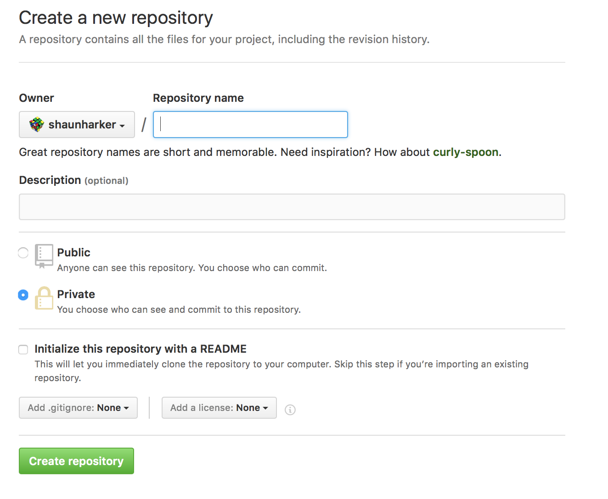
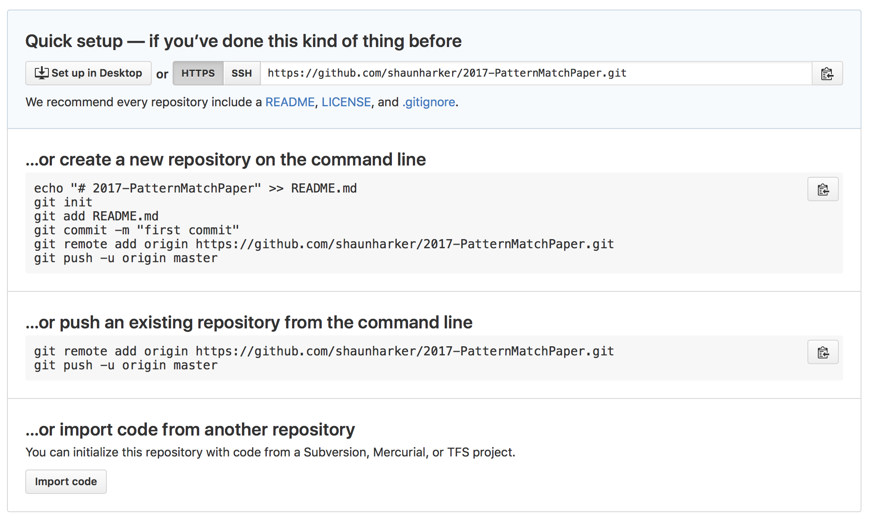
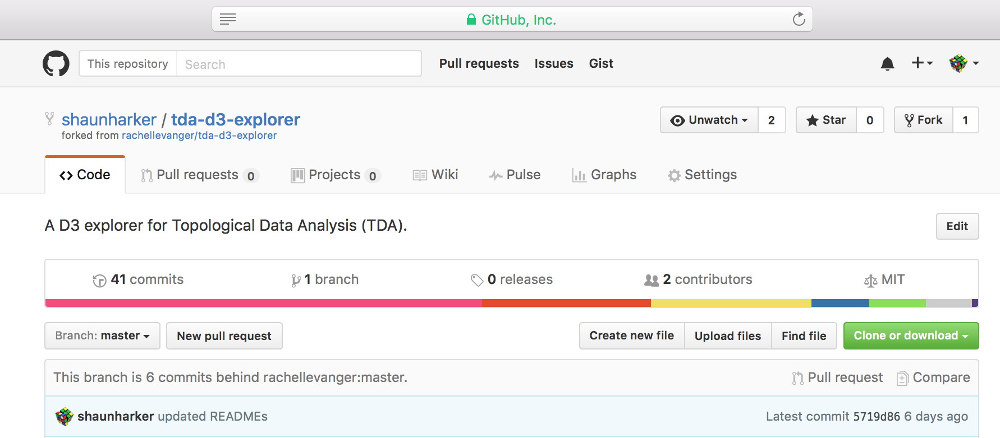
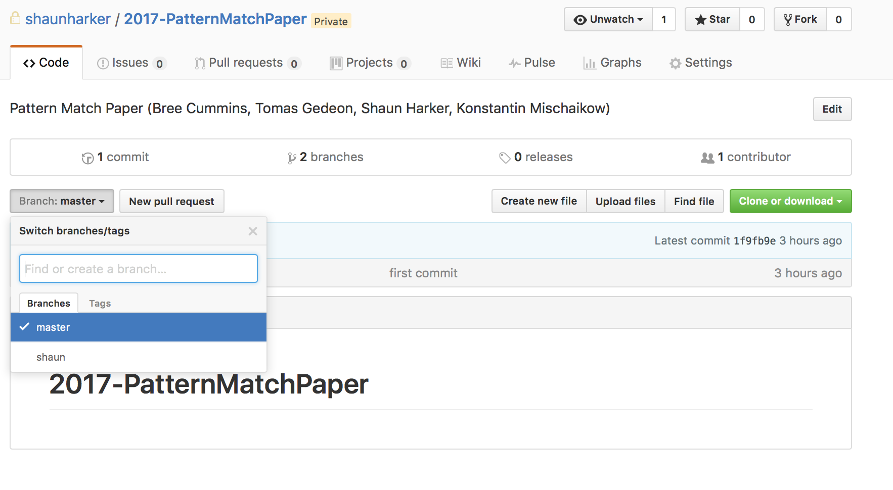
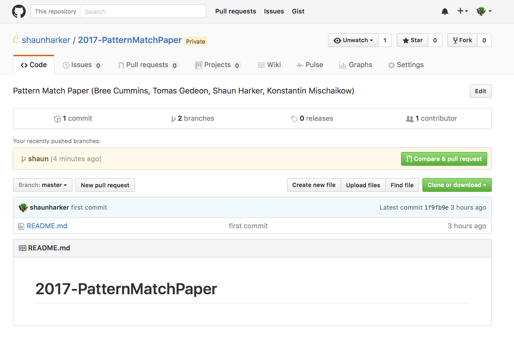
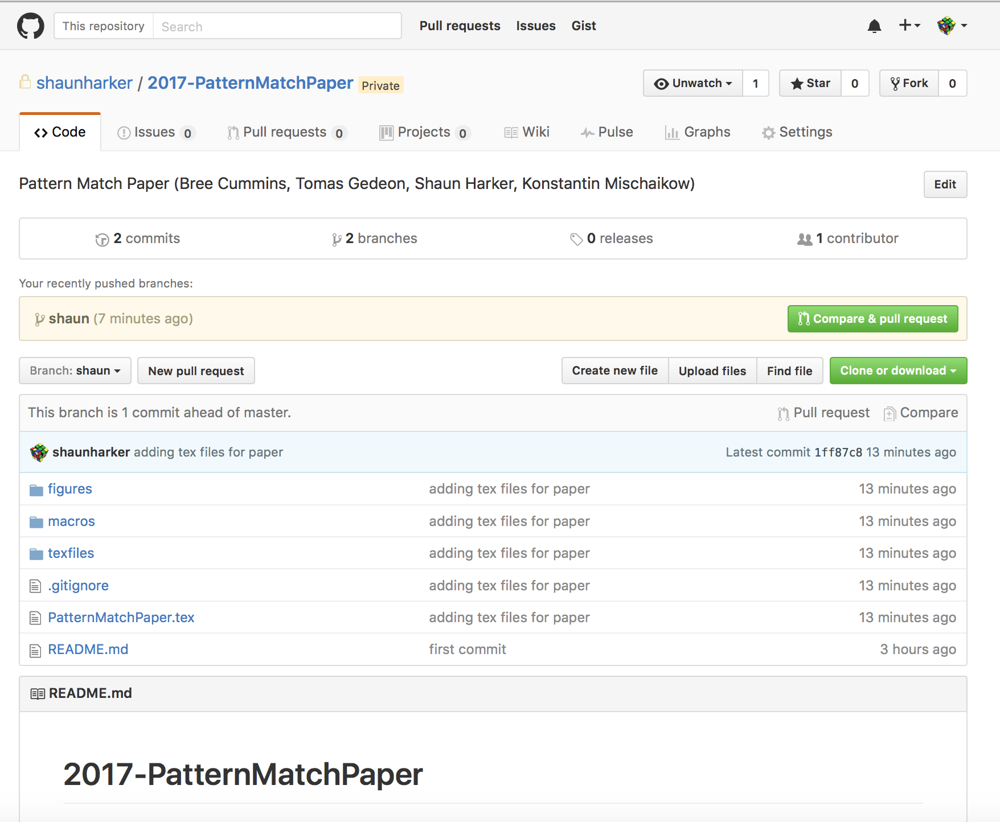
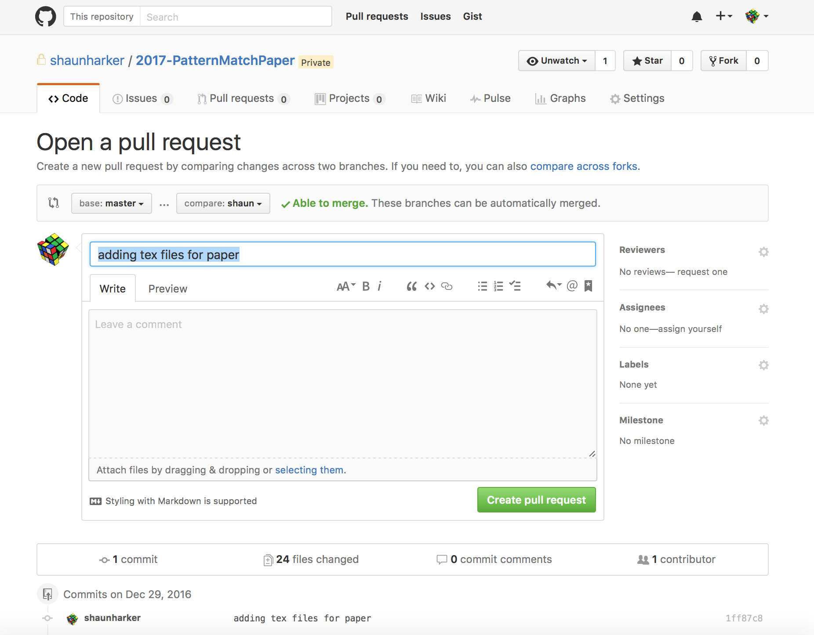
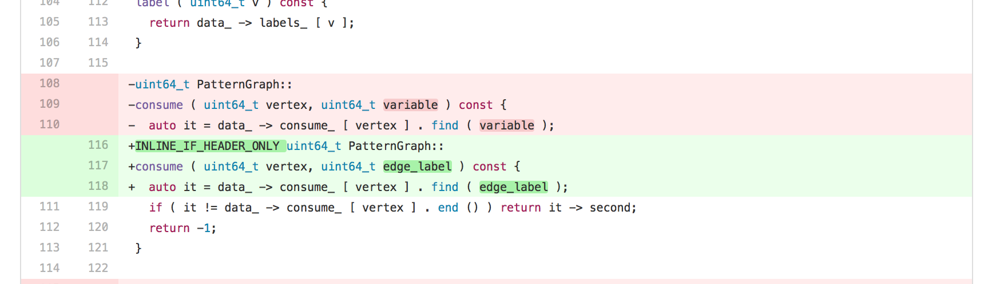

Shaun Harker 2016-12-29-1245
I start with a "cheat sheet"; a more in-depth tutorial follows after.
git clone git@github.com:YOUR_USER_NAME/2017-PatternMatchPaper.gitgit status to check on which changes have been madegit add files in order to stage them for commitsgit commit -m "useful commit message" to commit changesgit push in order to push the changes into your forked repositorygit pull mainrepo master (Pull in changes from coauthors)git status (to see what conflicts there are),git add conflicted-file.tex (to mark resolution of the conflicted files once they are editied), and git commit -m "merged changed from main repository" (to commit the merge after all conflicts are resolved).git push (to sync your changes to your forked repo)git status and make sure you've commited your own edits as in (1).git pull mainrepo master and resolve conflicts as in (2).git push to make sure your forked repo is up-to-date with your local repo.

The following was displayed:


cd Desktop
mkdir 2017-PatternMatchPaper
cd 2017-PatternMatchPaper
echo "# 2017-PatternMatchPaper" >> README.md
git init
git add README.md
git commit -m "first commit"
git remote add origin git@github.com:shaunharker/2017-PatternMatchPaper.git
git push -u origin master
It is not, perhaps, immediately clear what has been done, so let's stop and explain a couple concepts.
git statusgit remotegit clonegit pull git pushgit add git rm git mv git commitgit is a command line program which does version controlGitHub is a company that does a great job of managing remote git repositories to make it easy to share work.ls -a on the command line reveals the secret. There is a hidden directory named .git in the root of the repository. This is how git knows what is going on when it is issued directives. It's completely self-contained.git status this is revealed:1 ✓ /Users/sharker
sharker@athena [03:45:25] > git status
fatal: Not a git repository (or any of the parent directories): .gitBut if I navigate into the 2017-PatternMatchPaper repository, it's a different story:
4 ✓ /Users/sharker/Desktop/2017-PatternMatchPaper
sharker@athena [03:45:54] > git status
On branch master
Your branch is up-to-date with 'origin/master'.
Untracked files:
(use "git add <file>..." to include in what will be committed)
.gitignore
PatternMatchPaper.tex
macros/
texfiles/
nothing added to commit but untracked files present (use "git add" to track)It says On branch master which reflects a concept that a repository can have several distinct development states at the same time, called branches. We only have a single branch called master. I think that is probably the easiest thing to start with. (I'll use a branch later to "pretend" I'm another contributor so I can demonstrate the contribution workflow.)
Clearly git didn't write our paper so as you can surmise I've moved some files in. I did this by simply drag-and-drop, nothing special at all. Thus, I haven't told the version control of git about, them, so git status sees them and let's me know they are untracked.
The .gitignore is a file I made as well; also not tracked yet until I tell it to. It has special meaning to git; it tells it that sometimes I will put some files in the repository that I don't want it to whine about not being under version control when I type git status (e.g. all the junk files a tex compilation will create).
origin. I can see this as follows:42 ✓ /Users/sharker/Desktop/2017-PatternMatchPaper
sharker@athena [03:04:31] > git remote -v
origin git@github.com:shaunharker/2017-PatternMatchPaper.git (fetch)
origin git@github.com:shaunharker/2017-PatternMatchPaper.git (push)git status mentioned the repository was up to date with origin/master. Since origin is the remote repository on GitHub, what it is saying is that there is no information on the GitHub repository that isn't on my local repository. The master part of origin/master is called a branch; there is only one branch currently and it is named master (the traditional name for the main branch) so we can ignore this aspect.git clone git@github.com:shaunharker/2017-PatternMatchPaper.gitWhere does that crazy URL come from, anyway? Here's how you can get a hold of it:

What this technically does is creates a new github repository which is identical to the one at GitHub and sets up the remote named origin to be the GitHub repository. (It also sets up "tracking" so git status will tell me if I'm ahead or behind or up-to-date.) This is precisely the situation we already have, so this is just saying "yes, since we are up-to-date, we can trash our local copy and not lose data."
git clone on the GitHub repository, and they can both interact with it. The idea is to keep it simple though; don't make a bunch of repos and then talk in weird patterns. Use the central GitHub repo as, well, a hub. A star-shaped topology.git push directive which asks it to propagate changes to the remote repository.git push from another clone on another machine) these changes do not automatically propagate downstream to my computer. I would have to explicitly order this with git pull.git add <new-or-modified-file>
git rm <file-i-no-longer-want-under-version-control>
git mv <file-to-give-a-different-name-or-location>
git status # tell me which files I
git commit -m "commit message explaining set of changes"git commit, all git add and git rm are simply staged changes. The transaction is not complete and can be rolled back easily. git add lets me tell it I'm putting a new file under version control.git rm lets it know I'm getting rid of something.git add, then git status will let me know there is a file untracked by version control, reminding me to git add it.rm a file (not git rm) then git status will let me know its gone, but tell me its an unstaged change.git status and see things are staged as I want them, I issue git commit -m "explanation of changes", and this commits the new version to the repository.git push to push those changes to the remote GitHub repository.Example:
# Assume I made a new file "file.txt"
# and want to commit the change
git add file.txt
git commit -m "added a file named file.txt"
git pushgit add those tex files, then git commit the staged changes, and then git push to the remote repository!"
git clone. The origin remote to the local repo is the forked repository on GitHub.In other words, there needs to be a way to git pull from the main repo, and git push to the main repo. It turns out git pull works just fine (but you have to give it an argument to say to pull from the main repo and not the forked repo), put git push is a no go -- you don't have rights to push to the main repo! You only have rights to git push to your own fork. Instead of pushing, you request that the main repo maintainer do a git pull from your fork. So syncing your forked repo with the main repo is a matter of git pulling, which requires no authorization, and Pull Requests, which cause an e-mail to be sent and GitHub has a great little feature to see what the changes can be merged and make it as simple as clicking a button if all is done properly (i.e. the PR can be merged without conflicts).
More details:
git pull. Except you have to tell it to pull from a remote other than origin. There are two ways to do this:git pull https://github.com/shaunharker/2017-PatternMatchPaper.git masterThis is the method of https://help.github.com/articles/merging-an-upstream-repository-into-your-fork/. This command tells git to "pull in all the commits I don't have from the main repository on the branch master."
Rather than having to type https://github.com/shaunharker/2017-PatternMatchPaper.git every time this common operation is done it is better to set this up as a remote. This would only need to be done once:
git remote add mainrepo https://github.com/shaunharker/2017-PatternMatchPaper.gitTyping git remote -v would then tell you about two remote repositories it knows about: origin (your forked repository), and mainrepo (the main repository).
After setting up the remote you could pull in changes more easily with
git pull mainrepo masterTo be explicit, here is an example.
I currently have a forked repository from Rachel Levanger's project, and I'm behind a few commits:
Note I'm 6 commits behind. Let me check out my local repository which is git clone from my fork.
31 ✓ /Users/sharker/Unison/Work/tda-d3-explorer
sharker@athena [04:33:50] > git status
On branch master
Your branch is up-to-date with 'origin/master'.
Changes not staged for commit:
(use "git add <file>..." to update what will be committed)
(use "git checkout -- <file>..." to discard changes in working directory)
modified: .gitignore
no changes added to commit (use "git add" and/or "git commit -a")What this says is I am up to date. It also says I've made a local modification to a file called .gitignore but haven't staged that for a commit (I could easily revert the change). This is not something I need to worry about.
But wait, aren't I six commits behind? Well, what this says is my local repository is up to date with the remote named origin, which is my forked repository. But the forked repository is six commits behind Rachel's main repository. Let's check and see if I have the main repo on speed-dial as a remote:
32 ✓ /Users/sharker/Unison/Work/tda-d3-explorer
sharker@athena [04:33:53] > git remote -v
origin git@github.com:shaunharker/tda-d3-explorer.git (fetch)
origin git@github.com:shaunharker/tda-d3-explorer.git (push)
rachel git@github.com:rachellevanger/tda-d3-explorer.git (fetch)
rachel git@github.com:rachellevanger/tda-d3-explorer.git (push)Yes, I do, and I've named it rachel (rather than mainrepo).
So let's do
git pull rachel masterThis then says:
33 ✓ /Users/sharker/Unison/Work/tda-d3-explorer
sharker@athena [04:34:03] > git pull rachel master
remote: Counting objects: 34, done.
remote: Compressing objects: 100% (20/20), done.
remote: Total 34 (delta 22), reused 25 (delta 13), pack-reused 0
Unpacking objects: 100% (34/34), done.
From github.com:rachellevanger/tda-d3-explorer
* branch master -> FETCH_HEAD
b567444..44679a4 master -> rachel/master
Updating 5719d86..44679a4
Fast-forward
README.md | 32 +-
doc/Tutorial.ipynb | 2432 +-------------------
explorer.html | 677 ------
install.sh | 2 +
.../PersistenceExplorer/PersistenceExplorer.py | 7 +-
.../WebApp/PersistenceExplorer.css | 3 +-
.../WebApp/PersistenceExplorer.js | 116 +-
7 files changed, 122 insertions(+), 3147 deletions(-)
delete mode 100755 explorer.html
This is crazy computer talk for "OK, I pulled in the new information from Rachel's master branch and now you are up to date with that."
But, if I were to go onto GitHub, I'd still see I'm six commits behind. Why is that? Because that's a different repository; I just updated my local repository on my laptop with Rachel's commits to her master repo. My forked repository doesn't know about this yet.
Let me check git status again:
34 ✓ /Users/sharker/Unison/Work/tda-d3-explorer
sharker@athena [04:38:24] > git status
On branch master
Your branch is ahead of 'origin/master' by 6 commits.
(use "git push" to publish your local commits)
Changes not staged for commit:
(use "git add <file>..." to update what will be committed)
(use "git checkout -- <file>..." to discard changes in working directory)
modified: .gitignore
no changes added to commit (use "git add" and/or "git commit -a")
This tells me about the issue. As far as it is concerned, those 6 commits are just like any other 6 commits I may have made locally and not pushed to my origin repo yet. So... I'll push them.
35 ✓ /Users/sharker/Unison/Work/tda-d3-explorer
sharker@athena [04:40:23] > git push
Counting objects: 34, done.
Delta compression using up to 8 threads.
Compressing objects: 100% (33/33), done.
Writing objects: 100% (34/34), 5.09 KiB | 0 bytes/s, done.
Total 34 (delta 22), reused 0 (delta 0)
remote: Resolving deltas: 100% (22/22), completed with 10 local objects.
To github.com:shaunharker/tda-d3-explorer.git
5719d86..44679a4 master -> master
Now I can check git status again:
36 ✓ /Users/sharker/Unison/Work/tda-d3-explorer
sharker@athena [04:41:30] > git status
On branch master
Your branch is up-to-date with 'origin/master'.
Changes not staged for commit:
(use "git add <file>..." to update what will be committed)
(use "git checkout -- <file>..." to discard changes in working directory)
modified: .gitignore
no changes added to commit (use "git add" and/or "git commit -a")
...and I'm up to date. If I go on the GitHub website it will tell me my forked repository is up to date with Rachel's main repo.

git pull. That will happen. It's called a conflict.git pull and git yells at you and says it can't do it, since you are out of whack with what you are trying to pull in.git pull from my repo might cause a conflict, since you might have changed something I also changed, and it doesn't know whether to do what I did or keep what you did.git will do is simply tell you there was some kind of problem, and leave it to you to clean up the mess.git status as being conflicted in order to remove the conflicts (i.e. make the file correct). Then you git add the resolved version, and once all conflicted files have been fixed and git added, you git commit in order to finish the merge. (Technically, a git pull is a type of merge. It can be thought of as composing two sub-commands git fetch and git merge)I want to demonstrate the workflow, but since I am the main repo owner I have to more or less "simulate" what it would be like to not be me. So what I will do is make a branch called shaun and we will pretend this is the master branch of a forked repository.
So to be clear: in the example I'm doing, I will have a single repository with a branch master and a branch shaun. But this pretty much identical to the case of having main repo with a branch master and a forked repository with a branch master, respectively.
The branch manipulations can be skimmed over here if you plan to just work in master.
First I make my new branch:
git checkout -b shaun # Switch to a new branch named "shaun"
git push origin shaun # Let my fork know about this new branch.Here is me doing just that:
41 ✓ /Users/sharker/Desktop
sharker@athena [05:05:11] > cd 2017-PatternMatchPaper/
42 ✓ /Users/sharker/Desktop/2017-PatternMatchPaper
sharker@athena [05:05:14] > git checkout -b shaun
Switched to a new branch 'shaun'
43 ✓ /Users/sharker/Desktop/2017-PatternMatchPaper
sharker@athena [05:05:44] > git push origin shaun
Total 0 (delta 0), reused 0 (delta 0)
To github.com:shaunharker/2017-PatternMatchPaper.git
* [new branch] shaun -> shaunSo now I'm thinking in terms of the owner of the forked repository, who is going to do some work and then submit a PR to the main repo maintainer.
Because I did a git push, I can see this new branch showing up on GitHub:

So far so good. So now what I'm going to do is just work in my shaun branch (which is analogous to a coauthor working in their forked repo). Let's check out what git status says about things:
44 ✓ /Users/sharker/Desktop/2017-PatternMatchPaper
sharker@athena [05:05:53] > git status
On branch shaun
Untracked files:
(use "git add <file>..." to include in what will be committed)
.gitignore
PatternMatchPaper.tex
macros/
texfiles/
nothing added to commit but untracked files present (use "git add" to track)It says I'm on branch shaun. I have some files I want to put under version control. It's time for me to finally stage and commit these changes.
There are quite a few files to stage and commit and it would be annoying (but not impossible) to git add them all individually:

It turns out there is a shortcut here: I can type
git add .This will tell it to stage every file it finds, recursively into subdirectories, with the exception of files listed in .gitignore.
The reason for a .gitignore is not only to avoid unimportant files from getting into the repo, like .DS_Store OS files, but also the general rule is we don't want to include files which are generated by the other files in the repository. For software projects this means you don't put generated binaries under version control. For doing latex-papers, this means we don't put the generated pdf under version control.
On the other hand, we note there are a few figures which are PDFs. This is not a problem. The reason is that they do not change every single revision. But since I put .pdf in the .gitignore file this means I have to deal with them as exceptions:
46 ✓ /Users/sharker/Desktop/2017-PatternMatchPaper
sharker@athena [05:26:20] > git add .
47 ✓ /Users/sharker/Desktop/2017-PatternMatchPaper
sharker@athena [05:26:23] > git status
On branch shaun
Changes to be committed:
(use "git reset HEAD <file>..." to unstage)
new file: .gitignore
new file: PatternMatchPaper.tex
new file: macros/KM_definitions_4_2015.tex
new file: macros/correctm.tex
new file: texfiles/0-abstract.tex
new file: texfiles/0-authors.tex
new file: texfiles/0-packages.tex
new file: texfiles/1-introduction-introduction.tex
new file: texfiles/1-introduction-organization.tex
new file: texfiles/2-graphtheory-abstractmatching.tex
new file: texfiles/2-graphtheory-algorithms.tex
new file: texfiles/2-graphtheory-posetanddownset.tex
new file: texfiles/3-dynamics-matchingrelation.tex
new file: texfiles/3-dynamics-nofalsenegativesproof.tex
new file: texfiles/3-dynamics-overview.tex
new file: texfiles/3-dynamics-posetofextrema.tex
new file: texfiles/3-dynamics-searchgraph.tex
new file: texfiles/4-application-overview.tex
new file: texfiles/4-application-regulatorynetworks.tex
new file: texfiles/4-application-results.tex
new file: texfiles/4-application-timeseries.tex
As noted, it ignored my .pdf figures. But that's OK, since I can just git add them manually:
48 ✓ /Users/sharker/Desktop/2017-PatternMatchPaper
sharker@athena [05:26:26] > git add ./figures/alignmentgraph.pdf
The following paths are ignored by one of your .gitignore files:
figures/alignmentgraph.pdf
Use -f if you really want to add them.Uh, yes, I really do:
49 ✗ /Users/sharker/Desktop/2017-PatternMatchPaper
sharker@athena [05:27:51] > git add -f ./figures/alignmentgraph.pdf
50 ✓ /Users/sharker/Desktop/2017-PatternMatchPaper
sharker@athena [05:28:55] > git add -f ./figures/yeastdomaingraph.pdf
51 ✓ /Users/sharker/Desktop/2017-PatternMatchPaper
sharker@athena [05:29:06] > git add -f ./figures/yeastdata.pdf At this point, I have staged my files. They are ready to be committed. We do a git status and make sure there is nothing silly in there we don't want to commit to the repository, and then we issue the commit:
52 ✓ /Users/sharker/Desktop/2017-PatternMatchPaper
sharker@athena [05:29:11] > git commit -m "adding tex files for paper"
[shaun 1ff87c8] adding tex files for paper
24 files changed, 1937 insertions(+)
create mode 100644 .gitignore
create mode 100644 PatternMatchPaper.tex
create mode 100644 figures/alignmentgraph.pdf
create mode 100644 figures/yeastdata.pdf
create mode 100644 figures/yeastdomaingraph.pdf
create mode 100644 macros/KM_definitions_4_2015.tex
create mode 100644 macros/correctm.tex
create mode 100644 texfiles/0-abstract.tex
create mode 100644 texfiles/0-authors.tex
create mode 100644 texfiles/0-packages.tex
create mode 100644 texfiles/1-introduction-introduction.tex
create mode 100644 texfiles/1-introduction-organization.tex
create mode 100644 texfiles/2-graphtheory-abstractmatching.tex
create mode 100644 texfiles/2-graphtheory-algorithms.tex
create mode 100644 texfiles/2-graphtheory-posetanddownset.tex
create mode 100644 texfiles/3-dynamics-matchingrelation.tex
create mode 100644 texfiles/3-dynamics-nofalsenegativesproof.tex
create mode 100644 texfiles/3-dynamics-overview.tex
create mode 100644 texfiles/3-dynamics-posetofextrema.tex
create mode 100644 texfiles/3-dynamics-searchgraph.tex
create mode 100644 texfiles/4-application-overview.tex
create mode 100644 texfiles/4-application-regulatorynetworks.tex
create mode 100644 texfiles/4-application-results.tex
create mode 100644 texfiles/4-application-timeseries.tex
Now we can ask git status how we are doing:
53 ✓ /Users/sharker/Desktop/2017-PatternMatchPaper
sharker@athena [05:31:11] > git status
On branch shaun
nothing to commit, working tree clean(Note: for a coauthor working in their master branch this git status would have told them they were ahead on commits compared to the repo. The reason that didn't happen here is because the branch isn't set up to track properly -- see Remark 2 in the notes.)
And now we can git push:
55 ✓ /Users/sharker/Desktop/2017-PatternMatchPaper
sharker@athena [05:31:55] > git push
Counting objects: 29, done.
Delta compression using up to 8 threads.
Compressing objects: 100% (29/29), done.
Writing objects: 100% (29/29), 79.39 KiB | 0 bytes/s, done.
Total 29 (delta 0), reused 0 (delta 0)
To github.com:shaunharker/2017-PatternMatchPaper.git
1f9fb9e..1ff87c8 shaun -> shaunNow heading over to GitHub, we can see it is aware something has happened:

Normally, however, nothing would be visible yet in the main repo, since the change would only be in the forked repo. But since I'm simulating the forked repo with my shaun branch, it says something here. However, see that it is showing a repository still with just the bare README.md and nothing else. This is because it is showing the master branch by default. But I just pushed to the shaun branch.
This is good, since I'm trying to demonstrate what's it should be like for a coauthor. The master branch is the main repo, the shaun branch is just like the master branch of the coauthor's forked repo.
So let's switch to the shaun branch and see the view that a coauthor would have looking at their master after their commit:

Notice how it tells me I'm one commit ahead of master. This is of course the commit we just did. For a coauthor's forked repo, there would be a similar message, saying it was ahead of the main repo.
To get my commit into master I'm going to do a Pull Request (PR) as a coauthor would have to. This is goofy here since I am sending a Pull Request to myself, but it's perfectly allowed, and demonstrates what has to happen.

In general a comment is important explaining the intricacies of whatever the changes are, but in this case it's pretty obvious from the comment alone so I will just write "Migrating to GitHub". Then I click the "Create pull request."
This, of course, creates the pull request.
Let's change hats now, and look at things from the perspective of the main repo maintainer, who just got an e-mail notification that there is a pull request. This is what it will look like:

I can click on the "Files changed" tab, and it will show me the line-by-line changes for all 24 changed files. Since in this case all 24 files are actually completely new additions, it just shows the whole file in green:

If there were edits, it would show pink lines for deleted lines, and green lines for introduced lines, and it would avoid showing nearby lines. Here is an example from a commit on a software project:

Anyhow, let's accept the PR. This is done by clicking the "Merge Pull Request" button, and then "Confirm Merge". It informs me this is not a problem to do and there won't be merge conflicts. (In general, someone doing a PR is going to make the effort to make sure they are up-to-date with the master branch of the main repo so this is the case.)

It asks me if I want to delete the shaun branch too. That's a nice setup for when you have a branch named after some new feature, and do the work in there, and once its finally ready to get deployed you don't need that particular development branch anymore. But it's a bit of a red herring for us, since obviously if it was a coauthor contributing from their own forked repo I wouldn't be given an option to nuke their repo. But, sure I'll get rid of the shaun branch now that this demonstration is done.
Now let's check out my local repository.
Since we are thinking in terms of the main repo maintainer now, let me switch back to the master branch since this is the view they have:
63 ✓ /Users/sharker/Desktop/2017-PatternMatchPaper
sharker@athena [06:09:30] > git checkout master
Switched to branch 'master'
Your branch is behind 'origin/master' by 2 commits, and can be fast-forwarded.
(use "git pull" to update your local branch)This makes sense, since I haven't yet pulled the changes from my remote repo which just accepted the PR. So I do that:
72 ✓ /Users/sharker/Desktop/2017-PatternMatchPaper
sharker@athena [06:36:02] > git pull
Updating 1f9fb9e..f500c7a
Fast-forward
.gitignore | 27 ++
PatternMatchPaper.tex | 41 +++
figures/alignmentgraph.pdf | Bin 0 -> 16100 bytes
figures/yeastdata.pdf | Bin 0 -> 14836 bytes
figures/yeastdomaingraph.pdf | Bin 0 -> 19015 bytes
macros/KM_definitions_4_2015.tex | 247 ++++++++++++++++
macros/correctm.tex | 395 ++++++++++++++++++++++++++
texfiles/0-abstract.tex | 10 +
texfiles/0-authors.tex | 16 ++
texfiles/0-packages.tex | 43 +++
texfiles/1-introduction-introduction.tex | 39 +++
texfiles/1-introduction-organization.tex | 25 ++
texfiles/2-graphtheory-abstractmatching.tex | 43 +++
texfiles/2-graphtheory-algorithms.tex | 210 ++++++++++++++
texfiles/2-graphtheory-posetanddownset.tex | 46 +++
texfiles/3-dynamics-matchingrelation.tex | 24 ++
texfiles/3-dynamics-nofalsenegativesproof.tex | 82 ++++++
texfiles/3-dynamics-overview.tex | 31 ++
texfiles/3-dynamics-posetofextrema.tex | 63 ++++
texfiles/3-dynamics-searchgraph.tex | 85 ++++++
texfiles/4-application-overview.tex | 21 ++
texfiles/4-application-regulatorynetworks.tex | 179 ++++++++++++
texfiles/4-application-results.tex | 156 ++++++++++
texfiles/4-application-timeseries.tex | 154 ++++++++++
24 files changed, 1937 insertions(+)
create mode 100644 .gitignore
create mode 100644 PatternMatchPaper.tex
create mode 100644 figures/alignmentgraph.pdf
create mode 100644 figures/yeastdata.pdf
create mode 100644 figures/yeastdomaingraph.pdf
create mode 100644 macros/KM_definitions_4_2015.tex
create mode 100644 macros/correctm.tex
create mode 100644 texfiles/0-abstract.tex
create mode 100644 texfiles/0-authors.tex
create mode 100644 texfiles/0-packages.tex
create mode 100644 texfiles/1-introduction-introduction.tex
create mode 100644 texfiles/1-introduction-organization.tex
create mode 100644 texfiles/2-graphtheory-abstractmatching.tex
create mode 100644 texfiles/2-graphtheory-algorithms.tex
create mode 100644 texfiles/2-graphtheory-posetanddownset.tex
create mode 100644 texfiles/3-dynamics-matchingrelation.tex
create mode 100644 texfiles/3-dynamics-nofalsenegativesproof.tex
create mode 100644 texfiles/3-dynamics-overview.tex
create mode 100644 texfiles/3-dynamics-posetofextrema.tex
create mode 100644 texfiles/3-dynamics-searchgraph.tex
create mode 100644 texfiles/4-application-overview.tex
create mode 100644 texfiles/4-application-regulatorynetworks.tex
create mode 100644 texfiles/4-application-results.tex
create mode 100644 texfiles/4-application-timeseries.tex
And now I have the latest code locally.
.git/config. This is a text file and can be edited by hand. In particular see the line right after [remote "origin"] which says url = .... This line can be changed to read as either SSH or HTTPS url as in the images above. 39 ✓ /Users/sharker/Desktop/2017-PatternMatchPaper
sharker@athena [02:34:16] > more .git/config
[core]
repositoryformatversion = 0
filemode = true
bare = false
logallrefupdates = true
ignorecase = true
precomposeunicode = true
[remote "origin"]
url = git@github.com:shaunharker/2017-PatternMatchPaper.git
fetch = +refs/heads/*:refs/remotes/origin/*
[branch "master"]
remote = origin
merge = refs/heads/masterInterestingly, notice that when we did git status before we did the git push it didn't complain I'm a commit ahead of my remote repository. I'd rather it did. (This wouldn't be a problem for a coauthor actually using their master, I'm just noting that apparently I didn't do the best job setting up my branch.)
We can get this behavior with the command (http://stackoverflow.com/questions/520650/make-an-existing-git-branch-track-a-remote-branch):
git branch -u origin/shaunwhich tells it that I want to track the remote branch.
58 ✓ /Users/sharker/Desktop/2017-PatternMatchPaper
sharker@athena [05:37:24] > git branch -u origin/shaun
Branch shaun set up to track remote branch shaun from origin.
And now I get a better git status message:
59 ✓ /Users/sharker/Desktop/2017-PatternMatchPaper
sharker@athena [05:39:36] > git status
On branch shaun
Your branch is up-to-date with 'origin/shaun'.
nothing to commit, working tree clean